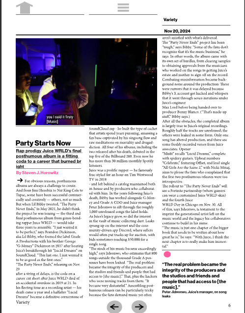
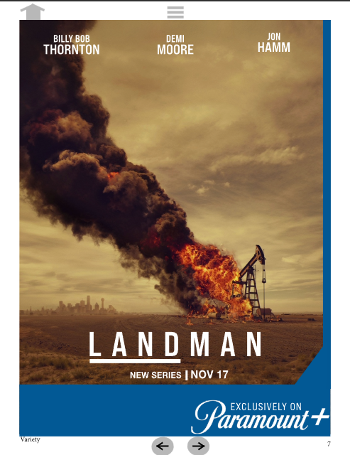
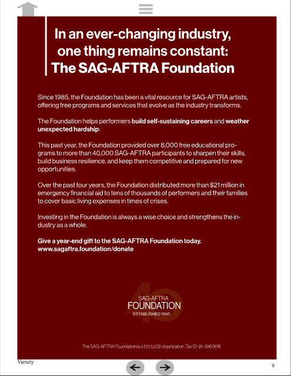
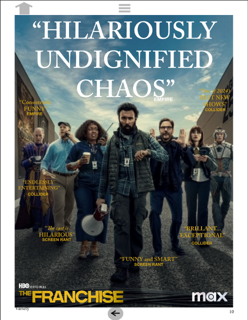

Project Overview
For this project, I was tasked with redesigning an existing print magazine as an interactive digital publication. Working within a simulated graphic design agency scenario, I developed a design proposal and storyboard before recreating the magazine in Adobe InDesign with interactive elements designed for digital viewing.
| Project Type | Interactive Magazine |
| Software | Adobe Indesign |
| Role | Graphic Designer |
| Publication | Variety |
| Medium | Digital/Interactive |
| Deliverable | Interactive Magazine |
The Challenge
The goal was to take an existing print-based magazine and adapt it for digital devices
while maintaining the publication's established visual identity. The redesign needed to
preserve the original layouts, typography, imagery, and editorial structure while introducing
interactive features that would make the magazine more engaging and easier to navigate digitally.
One of the biggest challenges was recreating the magazine's typography and complex editorial layouts
while maintaining consistency across multiple pages. I also had to learn how to translate elements
designed for print into interactive components that functioned effectively within a digital
publication.
Design Proposal & Storyboard
Before creating the final publication, I developed a design proposal and storyboard outlining the structure and interactive features of the redesigned magazine. The storyboard served as a blueprint for determining page layouts, navigation, hyperlinks, interactive buttons, and other digital elements before production began.
Recreating the Editorial Design
A major part of the project involved recreating the visual language of the original publication. I analyzed the magazine's typography, grid structure, spacing, imagery, color palette, and hierarchy and translated these elements into InDesign while maintaining consistency across the recreated pages.
Interactive Features
The final publication incorporated interactive elements that transformed the static magazine layout into a digital experience. Interactive buttons and hyperlinks were added to improve navigation and connect readers to additional content and external resources.
Gallery
Take a look at some of the pages from the recreation!





What I Learned
This project strengthened my understanding of editorial design, typography, layout systems, and interactive publishing. I also gained experience using Adobe InDesign's interactive features and learned how design decisions need to change when transitioning from a print publication to a digital experience.
Launch Interactive Magazine